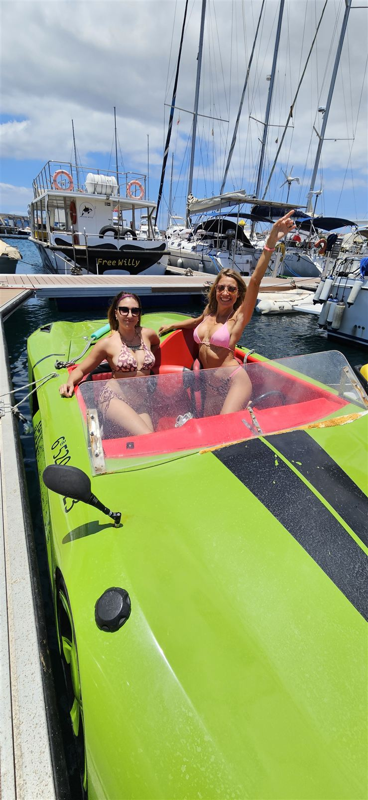
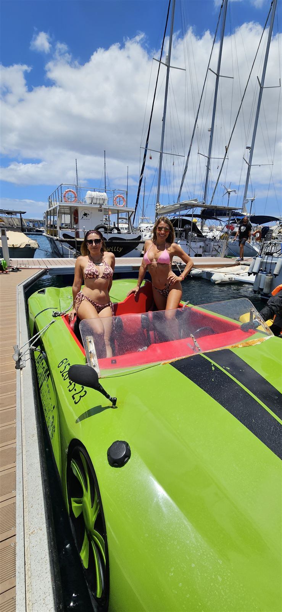
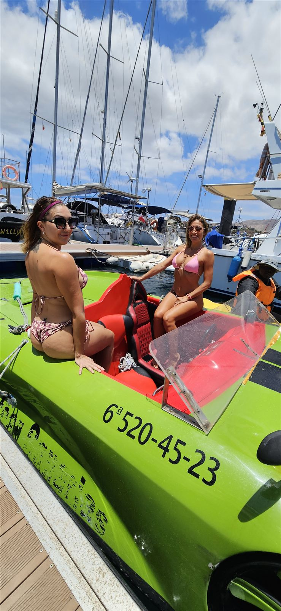
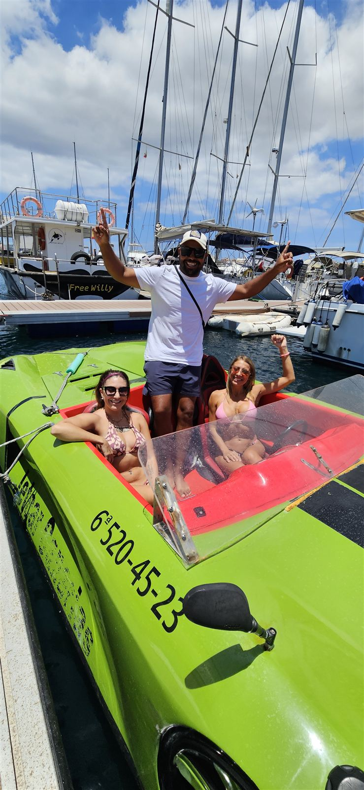
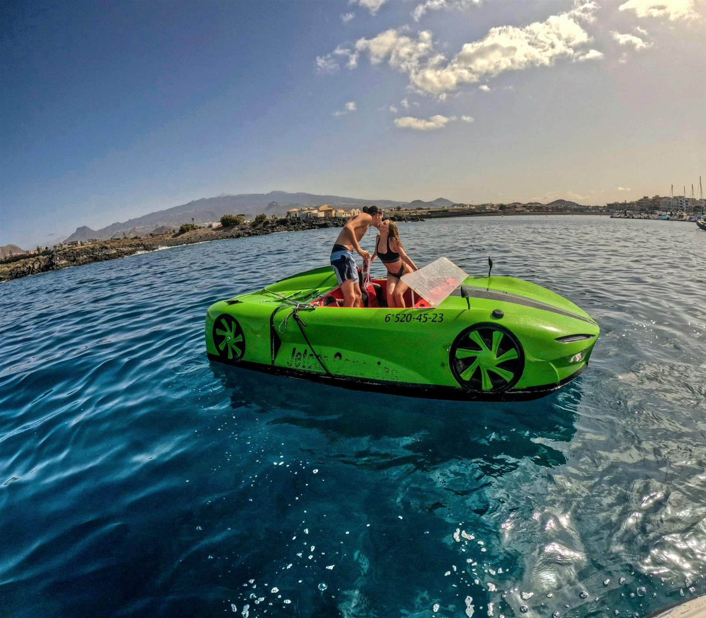
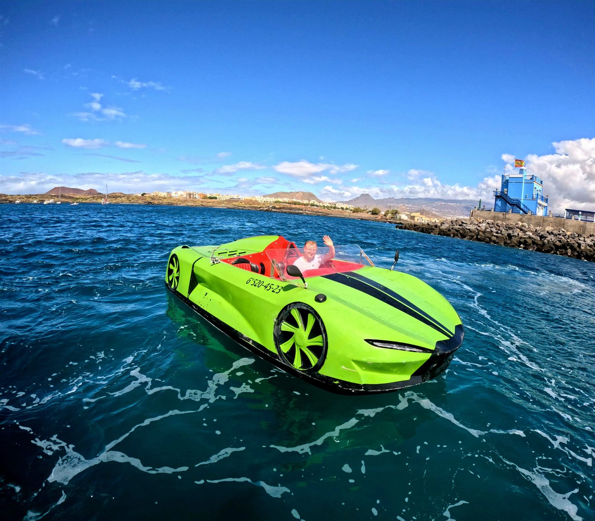
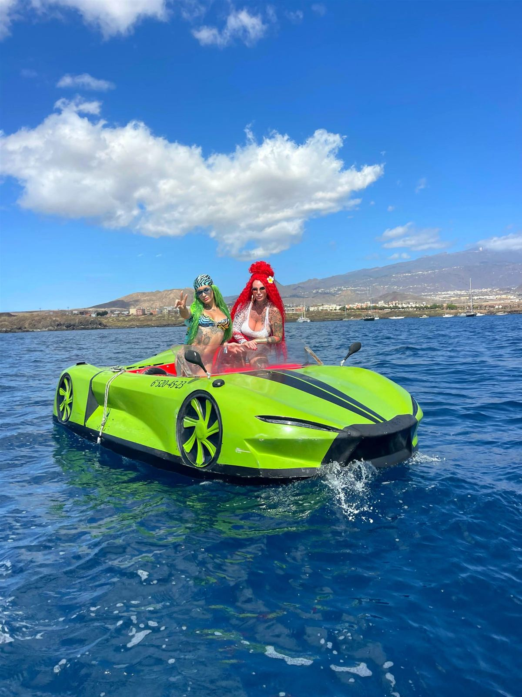
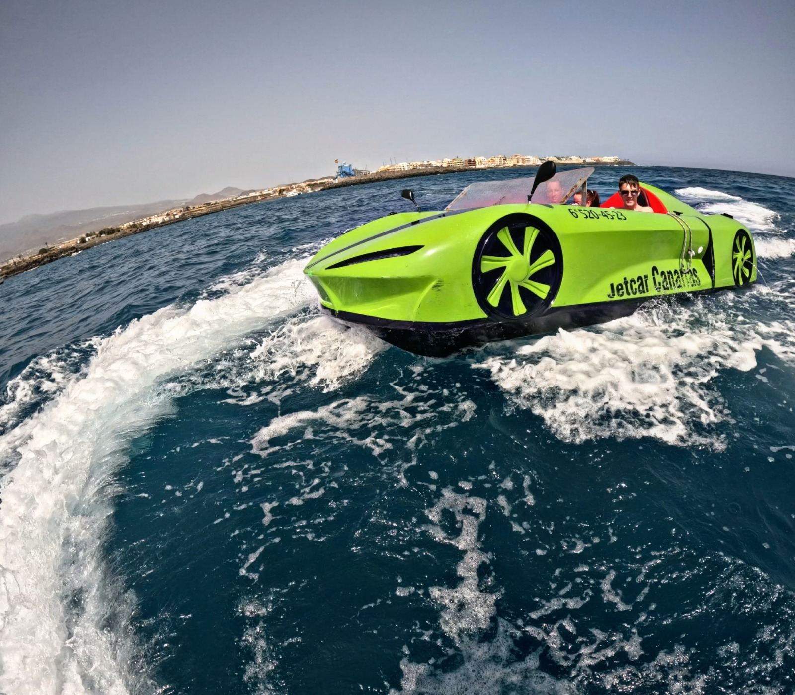
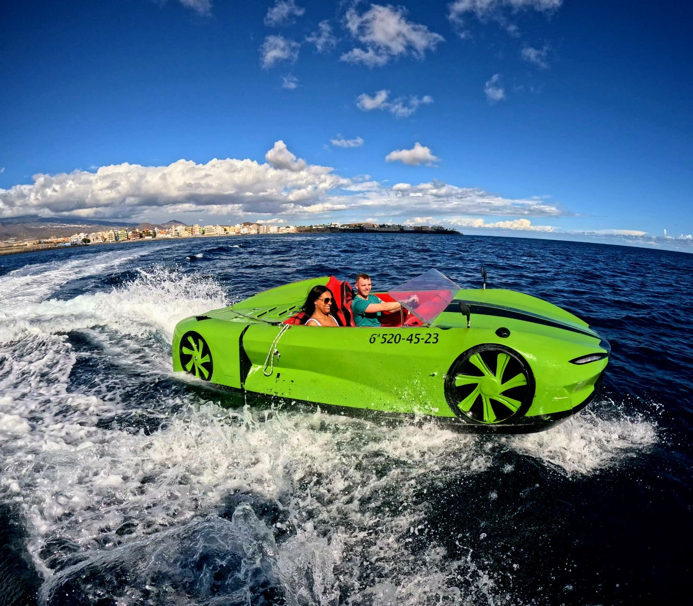
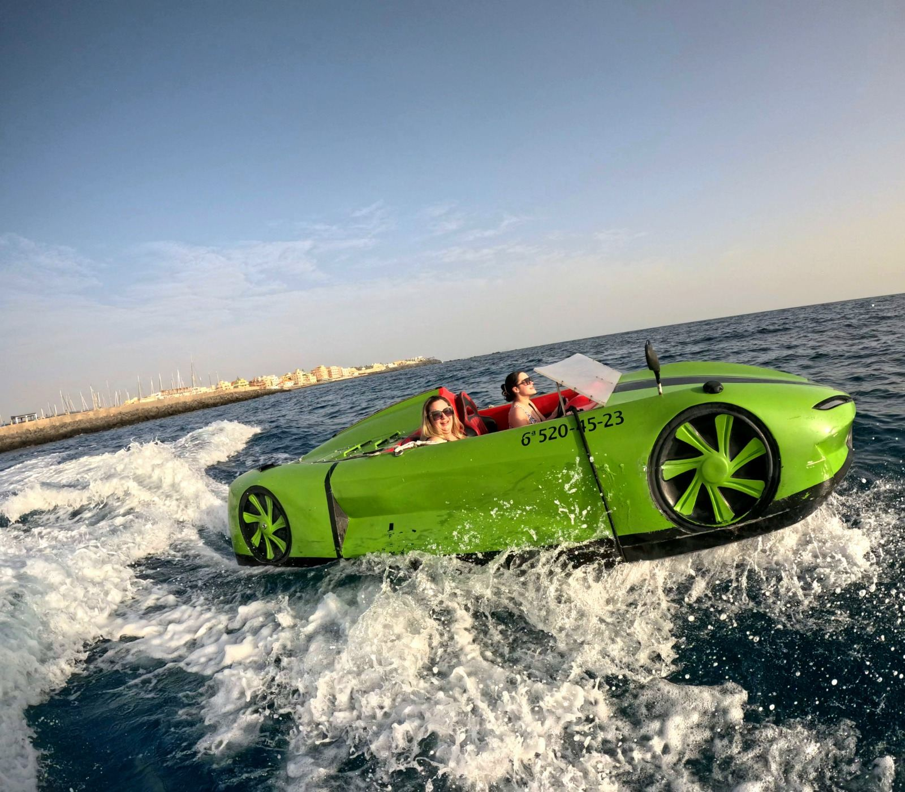

Un'esperienza unica e fuori dal comune: guidi una vera JetCar, una supercar d'ispirazione Lamborghini, direttamente sull'oceano Atlantico. Velocità, adrenalina e libertà si uniscono in un'attività esclusiva che combina l'emozione di una sportiva con l'energia del mare.
Accelera tra le onde e sentiti protagonista di un film stile Fast & Furious, ma in versione marina. Partenza dal Puerto de Las Galletas – Pantalán nº 2, una zona tranquilla e ben collegata del sud di Tenerife.
Sessioni adattate al tuo ritmo e alle condizioni del mare.
Transfer disponibile su richiesta, briefing iniziale e assistenza durante tutta l'attività.
Durante l'esperienza riprese e foto professionali, disponibili al termine per portarti a casa un ricordo epico.
Amanti della velocità, esperienze premium, addii al celibato, compleanni e chi cerca qualcosa di davvero diverso.
Dimmi quando e quanti siete. Ti rispondo con orari, condizioni e disponibilità.
💬 Contattaci su WhatsApp